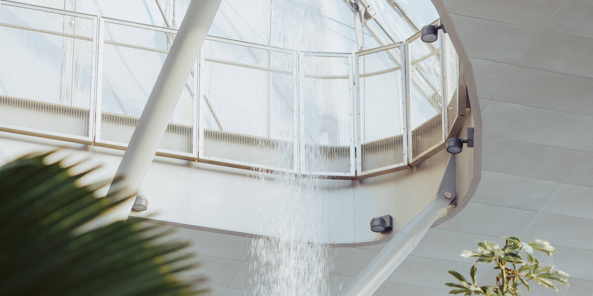
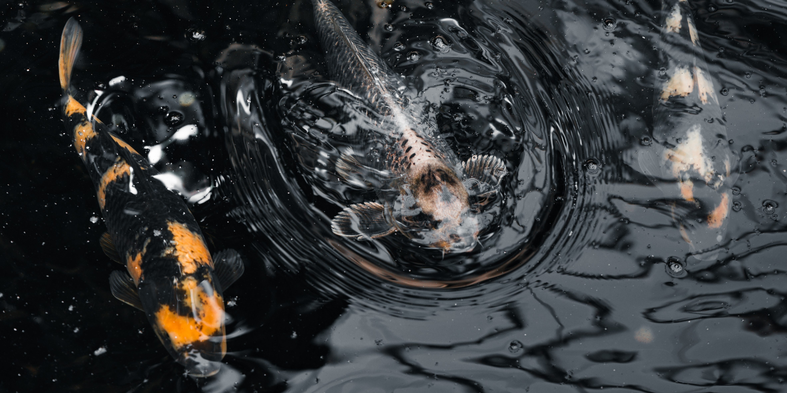

The Leaf at Assiniboine Park


Album Description: The Leaf at Assiniboine Park is an indoor habitat for multiple plants, biomes, and even butterflies. It's a great place to go, sit back, relax, and get a cup of coffee from their craft kitchen.